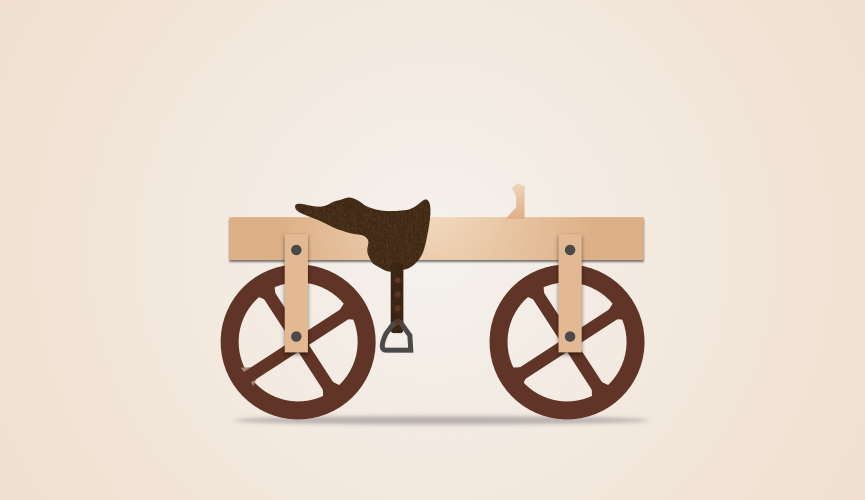
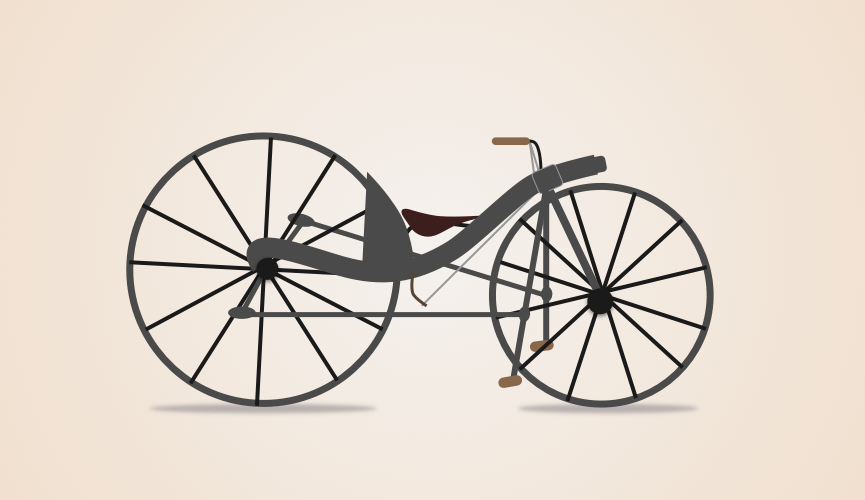
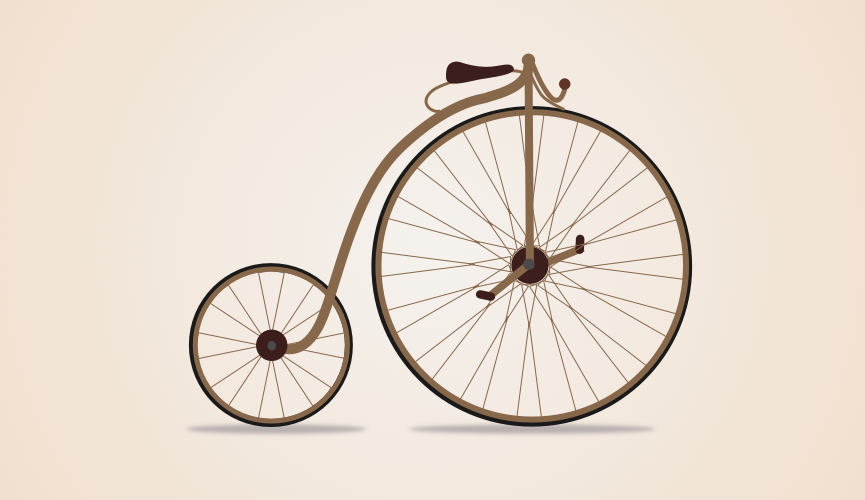
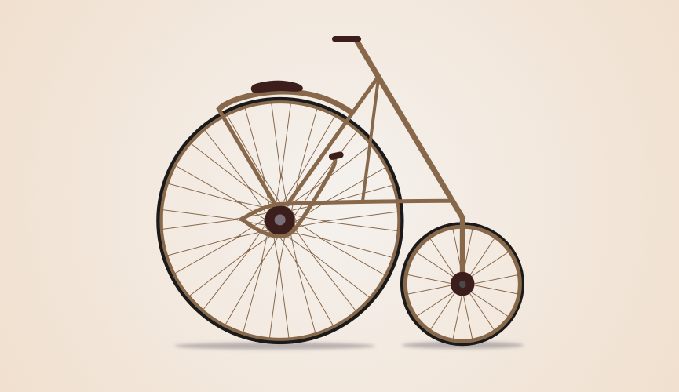
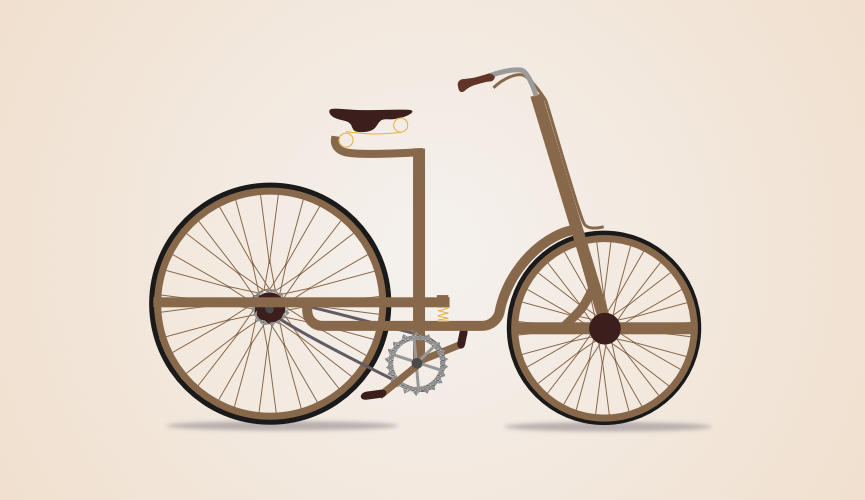
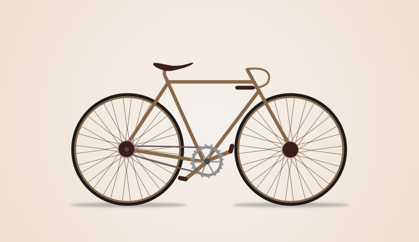

1810 hobby horse1815 hobby horse1818 hobby horse1839 self-propelling velocipede1869 bone shaker1872 penny-farthing1885 American Star bicycle1889 safety bicycle1899 safety bicycle1920 road bike1970 Raleigh Grand Prix bike2015 Fuji Flat Back Road Bike